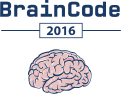

24h HACKATHON
18-19 marca 2016
start 16:00
BrainCode to nie jest zwykły hackathon, to wydarzenie, o którym się nie zapomina! Czas tworzenia nowych projektów, poznawania nowych ludzi, miejsce gdzie możesz dać upust pokładom wyobraźni oraz możliwość wspólnego stworzenia czegoś innowacyjnego!
To jedyny w Polsce 24 godzinny hackathon odbywający się w pięciu miastach jednocześnie: w Poznaniu, Warszawie, Krakowie, Toruniu oraz Wrocławiu. Organizowany przez allegro.tech we współpracy z najlepszymi uczelniami w Polsce skierowany jest zarówno do nowicjuszy jak i do profesjonalistów.


Lubisz programować i realizować swoje pomysły, ale brak Ci specjalistycznej wiedzy i czasu? A może brak Ci zespołu z którym mógłbyś coś “zakodować”? BrainCode 2016 to idealne miejsce dla Ciebie, by bez ograniczeń i bez względu na technologie zrealizować swoje plany! Jedynym limitem jest czas - masz dobę!
Aplikacje i narzędzia stworzone podczas wydarzenia będą miały szansę wypłynąć na szerokie wody dzięki dodatkowej wiedzy biznesowo- technicznej, którą allegro.tech zapewni podczas trwania hackathonu.


Na miejscu gwarantowana cała masa dobrej zabawy oraz networking z niesamowicie kreatywnymi ludzmi. Nie zabraknie również biegania z nerfgunem i objadania się pizzą.
Spotykamy się 18 marca o godz 16:00 w wybranej przez Ciebie lokalizacji. Po rejestracji uczestników i krótkim wprowadzeniu rozpoczniemy kodowanie, które zakończy się w sobotę o godzinie 17:00. Jury rozpocznie wówczas ocenę projektów. Imprezę zakończymy podsumowaniem oraz wyróżnieniem najlepszych pomysłów.
Do udziału zapraszamy gotowe (max 4 osobowe) zespoły oraz pojedyńcze osoby, które na miejscu uformują drużyny lub dołączą do istniejących.


Żeby wziąć udział w wydarzeniu należy zakupić bilet. Wszystkie środki, które uda się nam zebrać zostaną przeznaczone na rzecz Fundacji Mam Marzenie.
WAŻNE: Wszystkim, którzy zapiszą się do 26 lutego włącznie gwarantujemy koszulki w wybranych rozmiarach!
Dołącz do nas w Poznaniu, Warszawie, Krakowie, Toruniu i Wrocławiu!
Developer, team lead i product owner. Najbardziej satysfakcjonującym momentem w pracy jest dla niego udane wdrożenie i zadowoleni klienci. Uwielbia programowanie za możliwość tworzenia czegoś z niczego i obserwowania efektów swojej pracy. Ponad deklaracje przedkłada działający kod i konkretne liczby. Na codzień spełnia się dostarczając usługi techniczne dla zespołów w Allegro.
Jestem product ownerem/managerem z nastawieniem na dostarczanie najwyższej jakości usług moim Klientom. Niezależnie od technologii, projektu, produktu robię wszystko co konieczne by rezultat spełniał ich oczekiwania. Uwielbiam zarówno tworzyć usługi od zera jak i tworzyć rozbudowane systemy klasy enterprise zdolne do obsługi w globalnym świecie. Pomimo braku formalnego autorytetu skutecznie zarządzam developerami, testerami, administratorami.
W Allegro zajmuje się aplikacją iOS. Ma również doświadczenie w wizji komputerowej (OpenCV). Lubi pisać gemy w Ruby i skrypty, które robią wszystko za niego. W tematach nietechnicznych może opowiedzieć o doświadczeniach z dwóch erasmusów oraz stażu w USA
Android Developer, entuzjasta nowych technologii, fan produktów Google, Material Design oraz Open-source. Współtworzy aplikację Allegro dla systemu Android.
Absolwent Informatyki na Wydziale Informatyki, Elektroniki i Telekomunikacji Akademii Górniczo-Hutniczej w Krakowie. W trakcie kariery zawodowej odbywał praktyki/pracował m.in w CERNie, Swisscomie, Ocado. Wytrwale pracuje nad rozwiązywaniem „problemów”, przy okazji ucząc się nowych rzeczy. Obecnie pracuje w Grupie Allegro zdobywając doświadczenie w rozwiązaywaniu problemów z zakresu systemów rozproszonych.
Po ok 15 latach pracy spędzonych w branży IT pracując przy systemach typu e-commerce, cloud, big data przyznaję, że największą frajdę sprawia mi praca nad odpornymi na awarie, wysoko dostępnymi systemami rozproszonymi. Nie zawsze gonię za nowinkami technologicznymi, ale staram się trzymać zasady, którą wikipedia tłumaczy następująco: nie komplikuj, głuptasku
Pasjonat programowania usług tworzących platformę do budowania skalowalnych rozwiązań. Od 7 lat zmierza w kierunku backendu. Zetknął się z prawie wszystkimi platformami mobilnymi, konsultował rozwiązania Big Data w bankach, ale finalnie największą przyjemność sprawia mu pisanie czystego kodu w Javie i rozwiązywanie rzeczywistych problemów - stroniąc od używania technologii dla hecy.
Software Engineer with more than 5 years of commercial experience and Information Security Enthusiast. The main thing I am interested in is secure mobile applications development. I liked portable technology from the beginning and I am still a big fan of it now. We have a lot of fantastic smart gadgets which are waiting for the software commands to follow. Lets bring them interesting life!
Webdeveloper. Od prawie trzech lat dba o frontend serwisów Grupy Allegro. Pisze głównie w Angularze, od niedawna zagłębia się w tajniki Reacta i ES6. Uważa, że każda zmiana powinna być przyjazna dla użytkownika i wyglądać dobrze w każdej rozdzielczości. Po pracy uwalnia endorfiny na treningach zumby.
Odpowiedzialna za organizację warszawskich eventów IT (konferencje, hakatony, meetupy), projekty graficzne i promowanie marki allegro.tech
Communication Manager w hub:raum Krakow – Inkubatorze i Akceleratorze Deutsche Telekom dla startupów z regionu Europy Środkowo-Wschodniej. Wykładowca (innowacyjne modele biznesowe) na Wyższej Szkole Europejskiej w Krakowie. Związany z branżą innowacji i startupów 7 lat. Poprzednio koordynował konferencje i spotkania technologiczne, tworzył startup z obszaru m-health i prowadził firmę specjalizujacą się w szkoleniu project managerów w branży IT.
Inżynier oprogramowania z wieloletnim doświadczeniem. Z Allegro związany od czterech lat. Tworzył systemy odpowiedzialne za zabezpieczenia antyfraudowe oraz wspomagające procesy zakupowe. Obecnie stara się zrozumieć zachowanie użytkowników, wspomagając się przy tym narzędziami z rodziny big data.
Product Owner aplikacji mobilnych w Allegro. Programistka, która przeszła na stronę klienta i biznesu.
Fan nowych technologii. Podziwia pomysły i zapał Elona Muska. W ciepłych miesiącach płetwonurek, w zimnych narciarz. Na co dzień iOS Developer w Softnauts
Poczciwy, ceniący dobry smak i kino akcji
Od ponad 15 lat w branży IT, jako administrator baz danych, programista, architekt, manager i „inżynier od spraw katastrof”. Brałem udział w małych, średnich i nonsensownie dużych projektach, prowadzonych zgodnie zasadami „waterfall”, Agile oraz przy braku jakichkolwiek metodyk, z tym samym zawsze skutkiem. Co doprowadziło mnie do wniosku, że nie ważne co robisz tak długo, jak robisz to dobrze, w najprostszy z możliwych sposobów i używasz właściwych narzędzi które wykonają pracę za ciebie. W międzyczasie dałem się porwać ideą TDD oraz Software Craftmanship, do granic możliwości wyeksploatować tak piękne w swej prostocie pomysły jak REST i NoSQL, by potem porzucić je by zgłębić tajniki „system thinking” i zachwycić się siłą jaką niesie z sobą „metafora” i odkryć, że rządzą nami te same prawa „natury”. Niepokorny wyznawca kościoła JVM (nie tylko Java), badacz bytecode'u i JIT oraz wszelkiej maści parserów, interpeterów i kompilatorów. Od czasu do czasu można usłyszeć moje niskiej...
Tester, początkujący developer i fanatyk bezpieczeństwa aplikacji webowych oraz mobilnych. Wiedzę na ten temat wykorzystuje i uzupełnia w Allegro od 3 lat. Hobbystycznie miłośnik programów bug bounty, fantastycznej książki i kolarstwa.
Specjalista ds eventów w Grupie Allegro. Razem z Pauliną Mazurek tworzy zespół Promo IT czyli dział zajmujący się promowaniem technologii, wzmacnianiem wizerunku Allegro jako firmy technologicznej pod szyldem Allegro.tech oraz organizowaniem wydarzeń dla środowiska IT. Prywatnie, niespokojny duch, nieustannie w podróży.
Inżynier oprogramowania kładący nacisk z jednej strony na czystość i jakość kodu oraz architektury, z drugiej na skalowalność i fault tolerance tworzonych rozwiązań. Skupiony wokół szeroko rozumianych języków JVM.
W Allegro zajmuje się współtworzeniem aplikacji na iOS. W wolnym czasie próbuje swoich sił w hackatonach oraz zrobić coś użytecznego ze swoim Raspberry Pi.
Kasia jest analitykiem inwestycyjnym. Dołączyła do SpeedUp Group w 2014 roku i od tego czasu zajmuje się analizą i selekcją przedsięwzięć, które znajdują się w obszarze zainteresowania inwestycyjnego funduszu. Wspiera budowanie wartości spółek portfelowych, szczególnie tych znajdujących się w fazie seed. Kasia koordynowała drugą edycję pre-akceleratora Huge Thing. Od kilku lat aktywnie wspiera poznańską społeczność startupową.
Inżynier oprogramowania, preferujący technologie backend’owe, z ponad sześcioletnim stażem. Pasjonat nowych technologii nie dający się jednak łatwo porwać popularnym buzzword’om. Głównie interesujący się systemami rozproszonymi, problemami wynikającymi z ich natury i sposobami ich rozwiązania.
Projektant UX aplikacji mobilnych Allegro.
Prof. dr hab. inż. Krzysztof Zieliński jest kierownikiem Katedry Informatyki AGH na Wydziale EAIiE. Jego zainteresowania naukowe dotyczą rozproszonych systemów komputerowych, sieci komputerowych i architektur oprogramowania tych systemów ze szczególnym uwzględnieniem architektur udostępniania serwisów sieciowych oraz adaptowalnych systemów oprogramowania wykorzystujących informacje semantyczną. Bezpośrednio kieruje Grupą Systemów Rozproszonych. Jest autorem ponad 150 publikacji naukowych. Aktywnie współpracuje z szeregiem instytucji naukowych na świecie.
Pracuje w przemyśle związanym z grami komputerowymi od 2003 roku. Pierwszą grę stworzył już w wieku 10 lat. Od 4 lat prowadzi regularne szkolenia dla studentów i młodzieży z zakresu tworzenia gier w silniku Unity3D. Założyciel studia developerskiego "University of Games", zajmującego się tworzeniem wysokiej jakości gier oraz aplikacji mobilnych. Zajmuje się również kompleksowym doradztwem w zakresie realizacji aplikacji dla polskich oraz zagranicznych klientów m.in McDonalds, Bakoma, Trefl. Na swoim koncie ma już ponad 60 zrealizowanych tytułów.
Łukasz Cieśla, doświadczony praktyk w obszarze innowacji i przedsiębiorczości, od ponad 8 lat związany z tematyką ekosystemu startupowego oraz regionalnych systemów innowacji. Menedżer Operacyjny i Programowy w Centrum Innowacyjności hub:raum Krakow dla Europy środkowo-wschodniej (inkubator grupy Deutsche Telekom). Jego pasją jest pomoc startupom! Na co dzień skupia się na: tworzeniu programów akceleracyjnych, inkubacyjnych i rozwojowych na rzecz startupów, przedsiębiorczości korporacyjnej/współpracy korporacji i startupów (fundusze seed/venture capital oraz inkubatory w strukturach korporacji międzynarodowych), metodologiach zarządzania projektami innowacyjnymi (w szczególności Lean Startup). Zapalony fan Bayernu Monachium!
iOS Developer w Grupie Allegro. Założyciel i współorganizator Swift Warsaw. Gdy nie koduje prawdopodobnie robi ludziom zdjęcia.
Młody, zdolny chociaż nie zawsze poważny ;) Zawsze szukający sposobów aby nauczyć się czegoś nowego.
UX/UI Designer w Softnauts. Wie co znosi psychika grafika.
Developer, geek i miłośnik zamiany kawy w kod źródłowy. W Allegro od ponad 3 lat. Maczał palce w wielu obszarach i technologiach, żeby w końcu skoncentrować się na języku Java. Obecnie zajmuje się projektowaniem i developmentem nowego procesu logowania do Allegro. Poza pracą wciąż próbuje zrealizować jeden z wielu powstałych w jego głowie pomysłów na produkcję gry, która pobije sukces Wiedźmina 3.
Programista od roku 2002. Pasjonują go nowe technologie i uwielbia uczyć sie nowych jezykow programowania oraz różnych paradygmatów programowania. Pracuje jako profesjonalny developer od ponad 4 lat. W wolnym czasie lubi pograć w gry komputerowe.
Programista iOS, który jeszcze się nie nauczył, że niektórych rzeczy po prostu się nie da :)
Absolwent Wydziału Informatyki Uniwersytetu Wrocławskiego, od 9 lat pracuje w branży IT. W tym czasie zajmował stanowiska analityka IT, testera, lidera zespołu testów czy kierownika projektów, co pozwoliło mu zebrać doświadczenia z różnych etapów cyklu życia oprogramowania. Od wielu lat związany z Ceneo.pl, gdzie aktualnie jako Scrum Master i kierownik zespołów developerskich prowadzi zwinne projekty z dziedziny e-commerce dotyczące aplikacji mobilnych oraz internetowych.
Jestem pasjonatem nowych technologii z głową pełną pomysłów, które staram się wdrożyć w życie. W Allegro odpowiadam za rozwój naszej aplikacji na platformę Windows Phone. Specjalizuję się w programowaniu, ale poszerzam tą wiedzę także o aspekty związane z zarządzaniem projektami. Brałem wielokrotny udział w konkursie Microsoft Imagine, a dwukrotnie udało mi się stanąć na światowym podium. Staram się być obecny na różnych wydarzeniach technologicznych i jeśli jest ku temu okazja, to chętnie w roli prelegenta.
Pomimo posiadania ścisłego umysłu, Mateusz stara się odnajdywać piękno, prostę i harmonię w pracy ktorą wykonuje a także wierzy że najpotężniejsze są te najprostsze idee. W codziennej pracy łączy role architekta, programisty, mentora i badacza.
Pasjonat nowych technologii - świetnie się czuje zarówno w rozwiązaniach back-end (mikro-usługi w technologiach java i node.js) jak i mobilnych (android) oraz pomiędzy tymi dwoma światami (REST API). W Allegro od 2010 roku czynnie wspiera rozwiązania mobilne. Aktywnie wspiera open source i technologiczne wydarzenia dzieląc się swoją wiedzą i doświadczeniem.
W Grupie Allegro odpowiedzialny za rozwój aplikacji Allegro na system Android. Majac do wyboru kodzenie czy kobiety - zawsze wybieram namiętną randkę z SDK. Jak już mnie oderwą od kodu - to stepuję po stepach Kaukazu, szusuję na nartach i szukam żony.
Programista.
Michał is self-motivated software engineer with work experience in many programming languages and frameworks. He enjoys taking on new challenges, and constantly strives to learn new skills.
Michał jest starszym inżynierem oprogramowania w Allegro z prawie pięcioletnim doświadczeniem zawodowym. Wierzy, że bycie pragmatycznym i myślenie w czasie działania jest kluczem do wszelkiego sukcesu. Dla niego komputery i programowanie powinny przede wszystkim ułatwiać życie.
Developer aplikacji na platformę Android z 4 letnim doświadczeniem. Przykłada dużą uwagę aby być na bierząco z nowościami w świecie mobilnym.
Specjalizuje się w komercjalizacji badań i wprowadzaniu innowacyjnych produktów na rynek. Koordynator projektów zewnętrznych w Exea Smart Space. Odpowiada za realizację Startup Campus UMK, współorganizację toruńskiej edycji Startup Weekend. Zdobywał doświadczenie m.in. w Centrum Nowoczesności Młyn Wiedzy, Interdyscyplinarnym Centrum Nowoczesnych Technologii UMK czy Arriva RP. Współtwórca startupu Neurodio, który zajmuje się tworzeniem gier terapeutycznych.
Starszy inżynier oprogramowania. Od blisko 5 lat związany z Grupą Allegro, gdzie pracuje głównie po stronie backendu, tworząc rozmaite serwisy w Javie i Springu. Lubi też pokodować w JavaScripcie/ES6 i Angular.js, a w wolnych chwilach pograć w tryktraka (backgammona) oraz gry na Kinecta.
Developer java z 5 letnim doświadczeniem głównie przy tworzeniu aplikacji na system Android. Dbający o clean code zwolennik zasady KISS nie tylko w architekturze tworzonych systemów ale także w życiu prywatnym.
Pracowała jako Program Manager w krakowskim oddziale Google, gdzie odpowiadała za kilka projektów, między innymi Google for Entrepreneurs Krakow (GEK), którego celem było budowanie ekosystemu wspierającego polskich obecnych i przyszłych przedsiębiorców. W maju 2013 dzieliła się tym doświadczeniem w Ghanie, gdzie jako wolontariuszka pracowała z tamtejszymi organizacjami charytatywnymi, developerami oraz małymi i średnimi przedsiębiorstwami pomagając im przygotowywać modele zrównoważonego rozwoju. Obecnie jako Program Manager w centrum badawczo-rozwojowym Allegro w Krakowie odpowiada za działania związane z promowaniem technologii, wzmacnianie wizerunku Allegro jako firmy technologicznej pod szyldem Allegro.tech oraz wsparcie polskich społeczności developerskich i startupowych.
Software engineer ze smykałką biznesową. W allegro od 4 lat. Po pracy przed komputerem zasiada w szarym kapeluszu. Fan motoryzacji, jeździ szybkim autem i głośnym motocyklem.
W Allegro pracuję od prawie dwóch lat w roli programisty Android i odpowiada za rozwój aplikacji zakupowej. Wcześniej pracował również jako programista iOS. Swoją karierę rozpoczynał od pracy w małym, kilkuosobowym startupie. Interesują go nowe technologie - nie tylko te związane z mobile.
Mimo że zawsze staram się znaleźć prostsze i krótsze rozwiązania oraz uczyć się od najlepszych, to uważam, że z programowania powinno czerpać się dużo radości i zabawy! Nie tylko dlatego, że tworzymy nowe rzeczy i doświadczenia, ale również dlatego iż, w mojej opini, jest to bardzo zbliżone do rozwiązywania tajemnic i łamigłówek.
Paweł is a mobile software professional with 10+ years of experience as a Developer, Test Engineer, Project Manager and Product Owner of mobile products for various mobile platforms (including iOS and Android). True believer and evangelist of mobile technologies, convinced that mobile is the future of personal computing.
Piotrek to programista języków JVM (Java, Scala, Groovy), lubiący czysty kod i ładne testy. Kiedyś o mało co, nie został prawnikiem, więc stara się wykorzystywać umiejętności miękkie w swojej codziennej pracy. Wierzy w ludzi i zawsze przed rozpocząciem projektu, bardziej interesuje go, z kim będzie pracował, niż, co będzie robił. Od pewnego czasu zafascynowany tematyką Big Data, również zawodowo.
Menedżer ds. rozwoju w Bivrost – VR Video Technologies, po godzinach seryjny przedsiębiorca i doradca, organizator Google Developer Group, kajakarz
Już w ubiegłym stuleciu uczestniczył w budowie polskiego Internetu pracując w Gazecie Wyborczej Online, od początku współtworzył też portal Gazeta.pl. W 2004 roku związał się z branżą e-commerce i zmieniał technologicznie merlin.pl i empik.com a aktualnie zmienia Allegro. Lubi rozwiązania proste i dające większe możliwości niż pierwotnie planowane.
Tester aplikacji mobilnych z 7-letnim doświadczeniem na rynku mobile. Pasjonat mobilnych urządzeń i systemów oepracyjnych.
Full stack developer/software engineer. Zaczynał blisko 10 lat temu od rozproszonych systemów cache'owania danych, podróżując przez wszystkie warstwy aplikacji webowych, dziś tworzy rozwiązania dostępne bezpośrednio dla użytkowników. Przez ten czas mierzył się z takimi tematami jak przetwarzanie równoległe, skalowalne systemy rozproszone, multihoming, tls i content delivery czy aplikacje frontend'owe. Języki programowania to tylko sposób wyrażania siebie i idei (najczęściej programuje w c/c++, php, python, java). Stale poszukuje wiedzy i sposobów na efektywniejsze tworzenie oprogramowania. Prywatnie miłośnik motoryzacji, kina i pieszych wycieczek po górach.

Tester aplikacji na iOS/Androida/WP, śledzący z zapartym tchem wszelkie nowinki technologiczne.
Programista aplikacji iOS.
Od pięciu lat tworzy aplikacje na Androida. Przede wszystkim specjalizuje się w tworzeniu i doskonaleniu interfejsu użytkownika. Próbuje się też samodzielnie kształcić na temat User Experience. Wielki fan Androida, Material Design, Google i całego jego ekosystemu (miał Gmaila gdy był jeszcze tylko na zaproszenia). Zafascynowany nauką, szczególnie kosmologią oraz kognitywistyką. Energooszczędny, wodoodporny i uprawia spanie długodystansowe. W wolnym czasie dalej koduje, ale czasami też pogra na gitarze lub poczyta jakąś naukową książkę.
Product Owner, człowiek produktu. Pracuje z ludźmi i dla ludzi. Lubi, gdy z małej zmiany wychodzi duża rzecz. Aktywny uczestnik Internetów. Poza pracą znajdziesz mnie w parku, lesie, górach, nad morzem, z rodziną, wśród zieleni. Miłośnik natury - największego produktu na świecie.
Full stack developer piszący głównie w C# i JavaScript. W wolnym czasie zajmuje się Raspberry Pi.
Tester oprogramowania z pięcioletnim doświadczeniem. Zainteresowany testami eskploracyjnymi oraz testami bezpieczeństwa. Ostatnimi czasy początkujący programista. Prywatnie miłosnik dobrych książek i muzyki.
Architekt rozwiązań w Grupie Allegro, z firmą związany od 4 lat. Współorganizator toruńskiego JUGa i zapalony gracz.
Zapraszamy do obejrzenia galerii zdjęć oraz krótkiego filmu podsumowującego wydarzenie.
Zobacz stronę wydarzenia: braincode.mobi